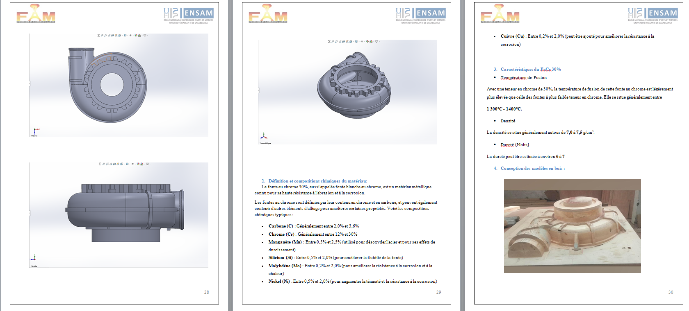
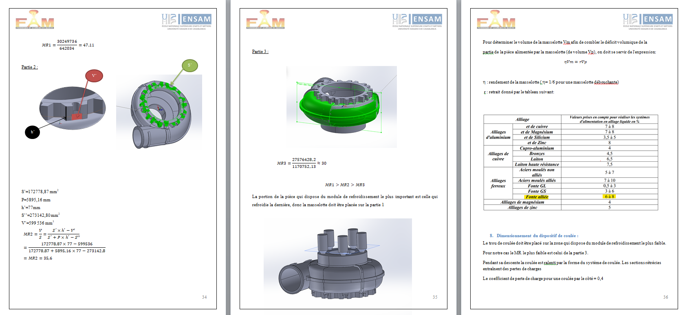
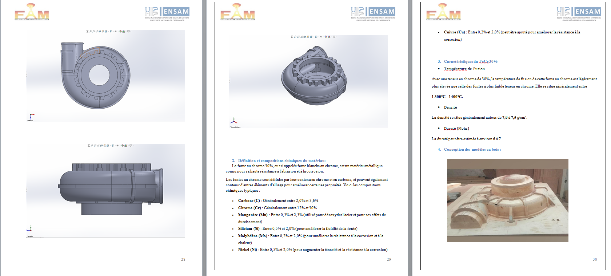
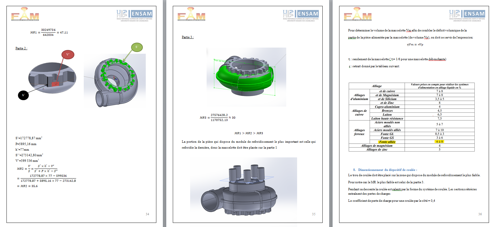

Expériences Professionnelles
Stage Projet de Fin D'année Organisme d'acceuil :Fonderie Aciérie du Maroc
Etude et processus de fabrication d'une volute de la pompe V300 de l'OCP.
Lors de mon stage à la Fonderie Aciérie du Maroc, j'ai réalisé l'étude et le dimensionnement d'une volute
pour la pompe V300 de l'OCP. J'ai travaillé sur la modélisation de la pièce avec SolidWorks, ainsi que sur
la conception du moule en bois et le dimensionnement du noyau.
Mon travail a également porté sur l'optimisation
du système de remplissage et du masselotage, tout en analysant les étapes de préparation de la coulée, de fusion,
de moulage et de démoulage pour garantir la faisabilité du processus de fabrication.


 



Stage d'application Organisme d'acceuil :Marsa Maroc
Sujet: Étude de l'axe de pivot central d'une chargeuse
Ce stage m'a permis de développer mon esprit d'analyse en identifiant les causes probables des problèmes rencontrés et en cherchant des solutions adaptées. En déployant mes connaissances en mécanique, j'ai réalisé la modélisation des charges et les calculs des forces appliquées sur les roulements du système. J'ai également évalué la conception initiale du constructeur sur CATIA V5 et proposé des améliorations pour prévenir les problèmes futurs. Cette expérience a renforcé ma capacité à diagnostiquer les défaillances, à comprendre les exigences de conception, et à contribuer de manière significative à l'optimisation des systèmes mécaniques.
Stage d'initiation
Organisme d'acceuil :Royal Air Maroc
Ma première expérience dans le monde industriel s'est déroulée lors de mon stage
d'initiation chez Royal Air Maroc. J'ai assisté aux opérations de maintenance
des aéronefs, notamment le remplacement des moteurs sur le Boeing 737 Max 8 et
l'inspection des structures des avions.
J'ai également observé le travail
effectué dans les ateliers, notamment ceux dédiés aux batteries et aux systèmes roue-frein,
et découvert diverses activités dans les départements tels que l'étude des moteurs, le
planning et le contrôle, ainsi que la gestion de la navigabilité.


Projets
Conception et simulation CFD d'un sous-marin
- Étude théorique statique et dynamique du sous-marin.
- Conception sur le logiciel CATIA V5.
- Simulation numérique sur ANSYS.
Conception d'un moule pour injection plastique
- Dimensionnement de la pièce.
- Conception de la pièce et du moule sur CATIA V5.
Activités Scolaires
Club ART & MÉTIER Mecatronics
En tant que membre du club ART ET MÉTIER MÉCATRONICS,
mon engagement et ma capacité à apprendre rapidement m'ont permis,
après quelques mois d'activité, de devenir membre du comité projet.
Dans ce rôle, j'ai assisté et orienté les groupes de projet dans la réalisation de leurs initiatives.
J'ai contribué en animant des séances de brainstorming et en les accompagnant
tout au long du processus de développement de leurs projets, facilitant ainsi leur succès.
Organisation de la Journée d'acquisition
Dans le cadre de la Journée d'Acquisition, un événement
national rassemblant des équipes de toutes les écoles du royaume pour présenter leurs projets,
j'ai occupé un rôle clé en tant que membre du comité événementiel.
Mes responsabilités comprenaient
l'organisation, la gestion et la coordination de l'événement. J'ai veillé à la bonne exécution des tâches
et assuré le bon déroulement de l'événement, contribuant ainsi à son succès global.
Compétences
Logiciels :
Design: Catia V5 - Solidworks.
Simulation : Abaqus - Ansys.
Programming: Python, Matlab, R, C.
Fabrication Mécanique:
Expérience pratique avec des outils, des matériaux et des procédés tels que le soudage, l'impression 3D, l'usinage CNC FAO.
Contact
- Email: imaneelfaiz02@gmail.com
- Phone: +212 694 60 00 17
- LinkedIn: linkedin.com/ImaneELFAIZ